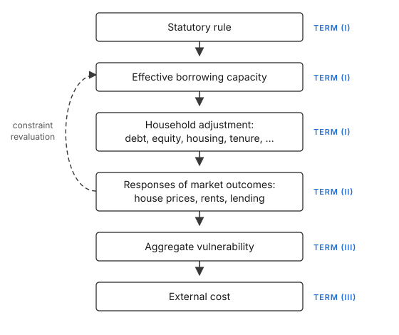

Framework
A mortgage constraint works through a sequence of steps, summarized in Figure 2. The statutory rule changes the effective borrowing capacity households face. Households in turn respond by adjusting their borrowing, saving, housing, tenure, or other margins.1 These responses, in turn, may move house prices, rents, and lender behavior, spreading the effects beyond the households directly constrained and determining how the policy changes aggregate outcomes.
In Appendix B, we outline a framework to capture these adjustments. In the context of that framework, the sequence discussed above provides three types of effects that are relevant for economic welfare: the direct effect on households whose effective borrowing capacity changes, the incidence of the equilibrium changes that follow, and potentially the corrective effects on the externalities associated with less restricted or unrestricted borrowing. In this section we summarize and go through the key organizing equation that emerges from that framework, while Appendix B provides more details.

Notes. The figure shows the sequence of policy effects behind equation 2: the first three boxes correspond to term (I) (Section 4), the fourth to term (II) (Section 5), and the last two to term (III) (Section 6). The dashed arrow indicates that market outcomes can feed back into effective borrowing capacity, as when lower house prices reduce collateral values under an LTV limit.
3.1The organizing equation
Before stating the key organizing equation, we introduce some notation. Let denote the statutory policy parameter, normalized so that a higher value permits more borrowing. For an LTV constraint, is the maximum loan-to-value ratio. For an LTI constraint, it is the maximum loan-to-income ratio. Let denote household ’s statutory borrowing capacity, measured in currency. Under an LTV rule, , where is the price per unit of housing and is the amount purchased; under an LTI rule, , where is the household income used by the lender when applying the rule. A change in the LTV limit thus affects statutory capacity in proportion to the property value, and a change in the LTI limit in proportion to income, so the instrument determines both the size and the distribution of statutory exposure. DSTI limits and amortization requirements fit the same notation, as Appendix B.1.1 shows. When presenting the framework below, we will consider one generic borrowing constraint .
The capacity households face in practice may differ from the statutory limit. Let denote effective borrowing capacity and define implementation pass-through by (1)
Pass-through is one when the statutory change reaches the household one-for-one and smaller when exemptions, lender discretion, or other implementation margins insulate the household.
Let denote the shadow value of relaxing household ’s borrowing constraint. It is zero when the constraint does not affect the household’s attainable choices and positive when additional capacity would improve them. Because it is a marginal concept, it does not capture the loss of a household displaced from ownership altogether, a case we return to below.
Mortgage constraints can also change market outcomes. Let denote an equilibrium outcome such as house prices, rents, mortgage spreads, or market-wide underwriting conditions. Let measure the direct money-metric exposure of household to that outcome, holding borrowing capacity fixed. For market prices, corresponds to the household’s net trading position. Net buyers and net sellers of housing, for example, hold opposite positions with respect to house prices, and borrowers and the owners of lending institutions hold opposite positions with respect to mortgage spreads.
Some market outcomes also feed back into borrowing capacity. This channel is captured by . Under an LTV rule, a decline in the house price reduces the collateral against which a household can borrow. Under an income-based rule, there is no corresponding mechanical effect of house prices on the statutory limit, although interest rates and spreads affect capacity under a DSTI limit.
Finally, let collect aggregate outcomes that potentially impose external costs. These may include aggregate household credit, the distribution of leverage and liquidity, the composition of new lending, and house-price growth. Let denote the external social cost of this aggregate vulnerability. It is external because individual borrowers and lenders take aggregate vulnerability as given, whereas losses they expect to bear themselves are already reflected in their choices.
Using this notation, we show in Appendix B that the social welfare effect of a marginal policy change can be written as (2) Equation 2 is a first-order welfare decomposition for a marginal policy change, derived under the assumptions that households optimize given prices and take aggregate vulnerability as given. It does not provide a welfare estimate without additional empirical and normative inputs, and the loss of households displaced from ownership altogether, which is not marginal, is discussed separately below. However, because the equation identifies the information needed to evaluate the policies from a welfare perspective, we use equation 2 as a starting point for selecting and synthesizing the literature. We now discuss each of the three terms in more detail.
Direct household effects. Term (I) values the policy-induced change in effective borrowing capacity. Since a tightening has for the policy parameters considered here, the term is negative for households with whenever the statutory change passes through to effective capacity. The magnitude of this effect depends on statutory exposure , pass-through , and the shadow value .
The responses we observe in the data – depleting savings, buying a cheaper home, or turning to family members for help – are ways in which households cope with a loss of borrowing capacity. They should therefore not be counted as separate costs in addition to that loss. They are still informative, however, as they reveal the alternatives available to constrained households, indicate how costly the constraint is, and show how the policy reshapes household balance sheets.
Households that stop buying altogether require separate treatment. Some may have been close to indifferent between owning and renting. For them, the private cost of postponing a purchase is small, even though an entire mortgage disappears from the credit statistics. Others may strongly prefer to own but are kept out by a down-payment requirement, a rejected application, or a bank that has exhausted its exemption quota. Their welfare loss can be substantial and is not captured by the marginal shadow value . We therefore treat this loss as part of the direct effect, but outside the first-order expression in equation 2. Credit data alone cannot distinguish between marginal households that choose not to buy and households that are effectively excluded from homeownership. Evidence on those who do not obtain a mortgage is therefore central to Section 4.
Our framework assumes that households make borrowing decisions in accordance with their own welfare. If borrowers instead underestimate repayment risk, a mortgage constraint could protect them from taking on debt they later regret. This creates an additional benefit that partly offsets the direct cost of the constraint and provides a welfare rationale for the consumer-protection objective discussed in Section 2. We develop this extension in Appendix B.3.1.
Equilibrium incidence. Term (II) captures welfare effects that operate through endogenous market responses, and each response is valued through two channels. The first is the household’s market exposure . For instance, a decline in house prices benefits net buyers and imposes losses on net sellers, a change in rents redistributes between renters and landlords, and a change in mortgage spreads between borrowers and the owners of lending institutions. The second is the revaluation of borrowing capacity: if an equilibrium outcome enters the effective constraint, a change in it has an additional value for households with . For instance, under LTV limits, a policy-induced decline in house prices reduces collateral values and may tighten capacity for existing homeowners beyond the statutory change.
The two channels aggregate differently. Every purchase is another household’s sale, so for market prices the exposures sum to zero and the first channel is a transfer between households. Yet, policymakers might attach different weights to different population groups, making the potential redistribution important. The second channel does not net out, as a price decline that reduces collateral values lowers borrowing capacity for every constrained household, with no offsetting gain elsewhere.
Corrective effects. Finally, Term (III) values the policy-induced change in the external costs. We often refer to this as “financial vulnerability” or “financial stability.” Since is a vector, is the vector of partial derivatives of the external cost with respect to each of its components: the marginal external cost of one more unit of aggregate credit, of a higher debt-service burden, of faster house-price growth, and so on. The dot product multiplies each of these marginal costs by the policy-induced change in the corresponding component and sums them, which is the total change in the external cost. If a tightening moves in a direction that lowers the external cost, then the corrective effect is positive. The term thus combines two empirical relationships: the total effect of the policy on each outcome in and the marginal external cost of each outcome, .
Because is evaluated at , the marginal external cost of each component can depend on the level of the others. In other words, the cross-partials of need not be zero. The evidence in Section 6.1 that credit growth predicts crises mainly when it coincides with rapid house-price growth, compressed spreads, or loosening lending standards (Greenwood et al. 2022; Krishnamurthy and Muir 2025; Kirti 2018) is consistent with positive cross-partials, and suggests that the corrective benefit of a given reduction in credit depends on the state in which the tightening occurs.